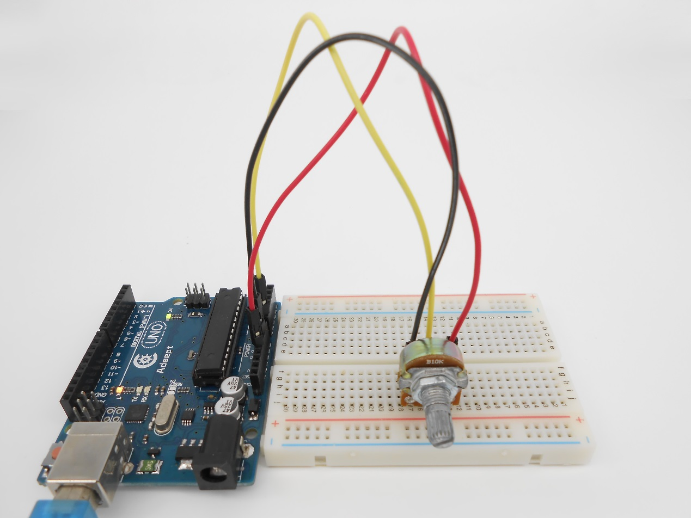
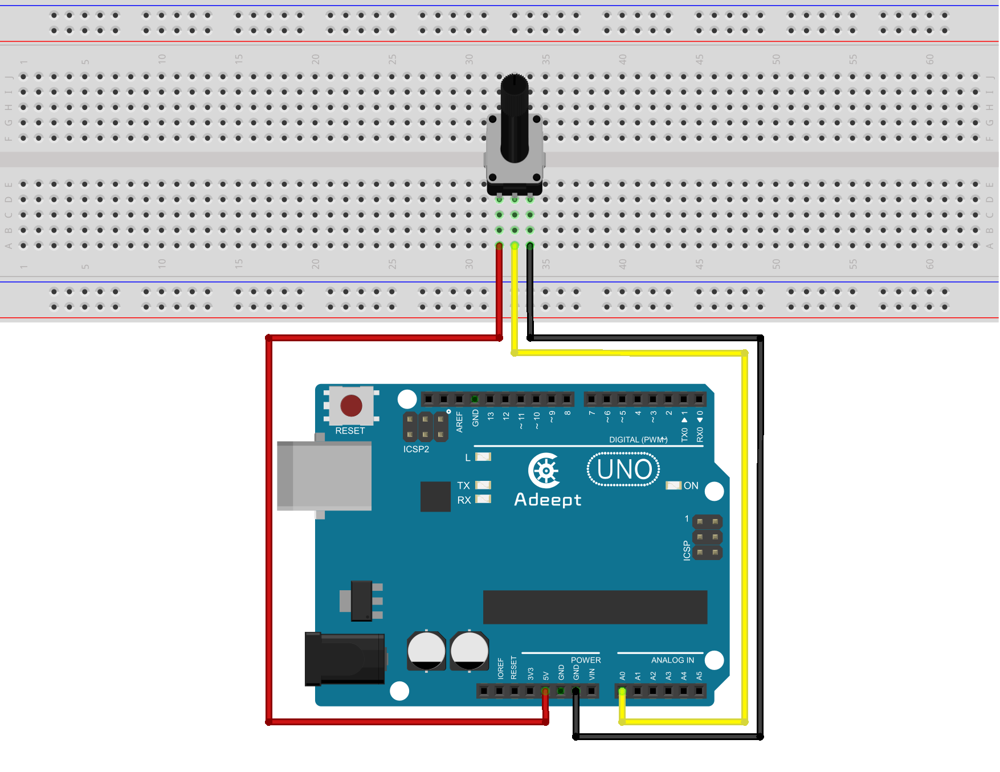
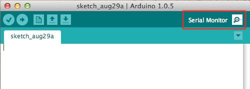
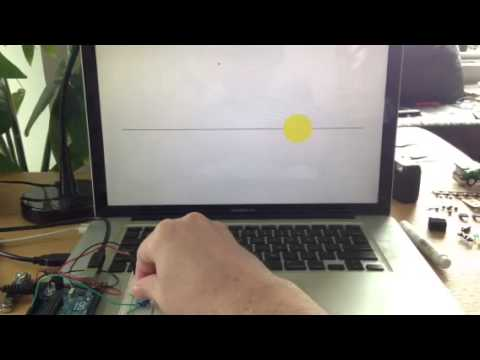

Cirkels en potmeter¶
Nu je weet hoe je Processing met de Arduino kunt laten communiceren, kun je van alles gaan tekenen met sensoren. We houden het nog even bij de potentiometer, maar nu gaan we een cirkel tekenen.
(bron: http://talyell.in/arduino-potentiometer-processing/ )
Stappen¶
1. Schakeling op het breadboard¶
Je kunt voor dit project dezelfde schakeling gebruiken als bij het vorige project. We gebruiken nu alleen de potmeter, dus niet de LED.
2. Zien wat er gebeurt¶
De functie Serial.println() schrijft de waardes naar de computer. Je kunt dat zien gebeuren in het zwarte venster onderaan in de Processing IDE. Dat venster is vaak erg handig als je bezig bent iets te maken en wilt zien of er wel data verstuurd wordt.
In de Arduino IDE kun je die data ook zien, al kan dat niet tegelijk met Processing. Als je in Processing even op de stop-knop drukt, dan kun je daarna in Arduino de seriële monitor openen, met de knop rechtsbovenin:
In Arduino zit ook een ingebouwde seriële plotter, en dat is nog leuker. Met de plotter kun je een grafiek zien van de waarden die je binnenkrijgt. Sluit daarvoor eerst het venster van de seriële monitor, ga dan naar het menu ‘Hulpmiddelen’ en kies ‘Seriële Plotter’. Als je nu aan de knop draait, zie je de grafiek ontstaan.
3. Code voor in Processing¶
We kunnen de code in de Arduino hetzelfde laten, maar in Processing gaan nu iets anders tekenen. Kopëer deze code, plak hem in Processing en start het script met de start-knop:
import processing.serial.*; // Importing the serial library to communicate with the Arduino
Serial myPort; // Initializing a vairable named 'myPort' for serial communication
float kleur ; // Variable for changing the background color
float m;
int padding = 100;
void setup() {
size (500, 500); // Size of the serial window, you can increase or decrease as you want
myPort = new Serial (this, "/dev/cu.usbmodemFD121", 9600); // Set the com port and the baud rate according to the Arduino IDE
myPort.bufferUntil ( '\n' ); // Receiving the data from the Arduino IDE
smooth();
strokeWeight(3);
stroke(100);
}
void serialEvent (Serial myPort) {
kleur = float (myPort.readStringUntil ( '\n' ) ) ; // Changing the background color according to received data
m = map(kleur, 255, 0, padding, width-padding);
println(kleur);
}
void draw() {
background(#FFFFF0);
line(padding, height/2, width-padding, height/2);
noStroke();
fill(#FFDE14);
ellipse(m, height/2, 150, 150);
stroke(100);
}
4. Cirkels tekenen!¶
Het resultaat zou er zo uit moeten zien:
Als je nu aan de potentiometer draait, dan zou je de gele cirkel moeten zien bewegen op je scherm.
Kun je eens kijken wat je allemaal aan het script in Processing kunt veranderen om het er anders uit te laten zien? Kun je de kleur mee laten veranderen? (Je zou daar in dit geval de functie fill() voor nodig hebben in plaats van background().)
Je kunt ook de grootte van de cirkel in het venster aanpassen (zie daarvoor de Coderdojo-handleiding over Processing, op de pagina met het kopje ‘Animatie’). Kun je de cirkel ook platter of ronder maken als je aan de potmeter draait? En kun je er meer cirkels laten verschijnen?
5. De grootte van het venster veranderen¶
De functie size() bepaalt de grootte van het venster. Als je size() helemaal weglaat, wordt een standaardformaat gebruikt van 100 bij 100 pixels.
Probeer het venster maar eens wat groter of kleiner te maken door andere getallen in te vullen voor de breedte en hoogte in pixels. Kun je het venster ook beeldvullend maken?